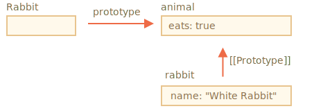
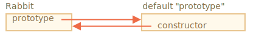
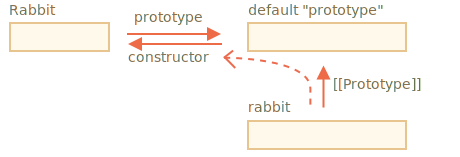

我们还记得，可以使用诸如 new F() 这样的构造函数来创建一个新对象。
如果 F.prototype 是一个对象，那么 new 操作符会使用它为新对象设置 [[Prototype]]。
JavaScript 从一开始就有了原型继承。这是 JavaScript 编程语言的核心特性之一。
但是在过去，没有直接对其进行访问的方式。唯一可靠的方法是本章中会介绍的构造函数的 `"prototype"` 属性。目前仍有许多脚本仍在使用它。请注意，这里的 F.prototype 指的是 F 的一个名为 "prototype" 的常规属性。这听起来与“原型”这个术语很类似，但这里我们实际上指的是具有该名字的常规属性。
下面是一个例子：
let animal = {
eats: true
};
function Rabbit(name) {
this.name = name;
}
Rabbit.prototype = animal;
let rabbit = new Rabbit("White Rabbit"); // rabbit.__proto__ == animal
alert( rabbit.eats ); // true设置 Rabbit.prototype = animal 的字面意思是：“当创建了一个 new Rabbit 时，把它的 [[Prototype]] 赋值为 animal”。
这是结果示意图：

在上图中，"prototype" 是一个水平箭头，表示一个常规属性，[[Prototype]] 是垂直的，表示 rabbit 继承自 animal。
```smart header="F.prototype 仅用在 new F 时"
F.prototype 属性仅在 new F 被调用时使用，它为新对象的 [[Prototype]] 赋值。
如果在创建之后，F.prototype 属性有了变化（F.prototype = <another object>），那么通过 new F 创建的新对象也将随之拥有新的对象作为 [[Prototype]]，但已经存在的对象将保持旧有的值。
## 默认的 F.prototype，构造器属性
每个函数都有 `"prototype"` 属性，即使我们没有提供它。
默认的 `"prototype"` 是一个只有属性 `constructor` 的对象，属性 `constructor` 指向函数自身。
像这样：
```js
function Rabbit() {}
/* default prototype
Rabbit.prototype = { constructor: Rabbit };
*/
我们可以检查一下：
function Rabbit() {}
// by default:
// Rabbit.prototype = { constructor: Rabbit }
alert( Rabbit.prototype.constructor == Rabbit ); // true通常，如果我们什么都不做，constructor 属性可以通过 [[Prototype]] 给所有 rabbits 使用：
function Rabbit() {}
// by default:
// Rabbit.prototype = { constructor: Rabbit }
let rabbit = new Rabbit(); // inherits from {constructor: Rabbit}
alert(rabbit.constructor == Rabbit); // true (from prototype)
我们可以使用 constructor 属性来创建一个新对象，该对象使用与现有对象相同的构造器。
像这样：
function Rabbit(name) {
this.name = name;
alert(name);
}
let rabbit = new Rabbit("White Rabbit");
let rabbit2 = new rabbit.constructor("Black Rabbit");
当我们有一个对象，但不知道它使用了哪个构造器（例如它来自第三方库），并且我们需要创建另一个类似的对象时，用这种方法就很方便。
但是，关于 "constructor" 最重要的是……
……JavaScript 自身并不能确保正确的 "constructor" 函数值。
是的，它存在于函数的默认 "prototype" 中，但仅此而已。之后会发生什么 —— 完全取决于我们。
特别是，如果我们将整个默认 prototype 替换掉，那么其中就不会有 "constructor" 了。
例如：
function Rabbit() {}
Rabbit.prototype = {
jumps: true
};
let rabbit = new Rabbit();
alert(rabbit.constructor === Rabbit); // false
因此，为了确保正确的 "constructor"，我们可以选择添加/删除属性到默认 "prototype"，而不是将其整个覆盖：
function Rabbit() {}
// 不要将 Rabbit.prototype 整个覆盖
// 可以向其中添加内容
Rabbit.prototype.jumps = true
// 默认的 Rabbit.prototype.constructor 被保留了下来或者，也可以手动重新创建 constructor 属性：
Rabbit.prototype = {
jumps: true,
constructor: Rabbit
};
// 这样的 constructor 也是正确的，因为我们手动添加了它在本章中，我们简要介绍了为通过构造函数创建的对象设置 [[Prototype]] 的方法。稍后我们将看到更多依赖于此的高级编程模式。
一切都很简单，只需要记住几条重点就可以清晰地掌握了：
F.prototype 属性（不要把它与 [[Prototype]] 弄混了）在 new F 被调用时为新对象的 [[Prototype]] 赋值。F.prototype 的值要么是一个对象，要么就是 null：其他值都不起作用。"prototype" 属性仅在设置了一个构造函数（constructor function），并通过 new 调用时，才具有这种特殊的影响。在常规对象上，prototype 没什么特别的：
let user = {
name: "John",
prototype: "Bla-bla" // 这里只是普通的属性
};默认情况下，所有函数都有 F.prototype = {constructor：F}，所以我们可以通过访问它的 "constructor" 属性来获取一个对象的构造器。